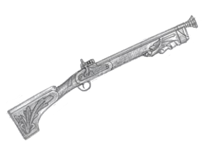

🎧 Activa l'àudio per a gaudir d'una immersió total en l'experiència.
En iniciar-se, la visualització s'obrirà en pantalla completa i la música anirà creixent progressivament per a traslladar-te al cor de la Festa.
Desplaça't cap avall per a navegar entre les diferents escenes i viure les dades de la festa.
Els dies 25, 26 i 27 d'abril, Alcoi es vesteix de gala per celebrar les Festes de Moros i Cristians en honor a Sant Jordi. Tres dies on la ciutat es transforma completament.
Les Festes de Moros i Cristians d'Alcoi són possibles gràcies a 28 filaes. Meitat cristianes, meitat mores. Cadascuna amb la seua pròpia historia e indumentària, formant dos bàndols preparats per a la batalla.
L'orde en què desfilen les filaes no és aleatori, sinó que segueix un sistema rotatori conegut com "la Roda". Cada any les filaes baixen una posició en l'orde: la filà que tanca la desfilada ostentant l'Alferesia, a l'any següent passarà al primer lloc per obrir l'entrada ostentant la Capitania.
Format per 14 filaes. Representen les tropes de la Creu: nobles cavallers, asturians, navarros i almogàvers. Desfilen al compàs de marxes cristianes i pasdobles majestuosos, preparats per defensar la ciutat.
L'exèrcit cristià obri la seua entrada amb el Capità a càrrec de la filà Andaluces. El fermall final el posa l'Alferes de la filà Asturianos.
Curiosament, el Capità d'enguany és també una de les filaes cristianes més antigues de la festa, documentada ja vora l'any 1839, igual que els Asturianos i Cides.
Encara que el nom prové de temps passats, la filà Aragonesos es una de les de més recent fundació. Es va recuperar a la dècada de 1960 per representar al barri de Batoi.
Les hosts de la Mitja Lluna. 14 filaes que inunden els carrers de marxes mores lentes i una elegància inconfusible.
La responsabilitat d'obrir l'Entrada com a Capità recau en la filà Marrakesch. Finalment, l'honor de tancar-la amb tots els honors l'ostenta l'Alferes de la filà Realistes.
Encara que la primera vegada que es documenten les filaes és en 1804, nombran a la filà Capes Colorades, les més veteranes de les que han arribat fins als nostres dies són la Llana i els Domingo Miques, totes dues fundades en 1811.
La Llana, a l’any 1817, va ser la pionera en incorporar una banda de música militaritzada a les desfilades. Van plantar la llavor del que hui coneixem com la majestuosa música festera d’Alcoi.
Són la filà més jove d'Alcoi. Creada l'any 1980 per l'Associació de Sant Jordi amb l'objectiu principal d'equilibrar les forces i fixar el nombre de filaes en 14 per cada bàndol.
És el teu torn! Fes clic en els escuts per obrir la seua fitxa històrica i vore la seua indumentària.
Històricament, els itineraris de les Entrades eren diferenciats segons el bàndol. En 1862 es van oficialitzar recorreguts des de les portes d'Alacant i Cocentaina, però en 1962 s'amplià el trajecte per la Plaça. Finalment, en 1965, es va consolidar el format actual: moros i cristians compartint un mateix itinerari complet des del Partidor fins a l'Avinguda del País Valencià.
El Partidor és el punt de partida de les nostres Entrades. Situat a la part més alta del centre històric, és el lloc on els sentiments estan a flor de pell.
En deixar arrere l'estretor de Sant Nicolauet, la desfilada s’obri pas triomfant cap al cor neuràlgic de la ciutat. És en aquest tram on la intensitat de la música cobra una nova dimensió, fent bategar els murs dels edificis i ressonant en cada balcó, abarrotat de gent que espera amb delit el pas de la Festa.
La formació realitza la volta completa a la Safata, passant amb tota la majestuositat per davant del Castell de Festes. És en este escenari emblemàtic on es viu un dels moments més simbòlics de la trilogia: l’Alcaide fa l'entrega oficial de les claus del castell al Capità Cristià, simbolitzant així la defensa de la vila.
En deixar arrere l'estretor del centre, l'itinerari s'eixampla en arribar a l'Avinguda del País Valencià. Ací, els festers respiren amb força i saluden eufòrics un públic que omple de gom a gom les voreres.
L'esquadra avança amb pas ferm fins a arribar al pont de Cervantes. És en este punt on, finalment, es trenquen les files i els festers s'abracen amb emoció, embriagats per la satisfacció del deure complit i el ressò de l'última marxa encara en el cor.
Mantenir l'ordre d'una marea humana tan gran és el repte principal de la Festa.
Una filà normal tarda sobre 55-58 minuts en completar la seua entrada pels carrers d'Alcoi.
*En aquesta simulació els socis de cada filà són exactes. Cada puntet representa 15 socis reals.
Una filà de càrrec (Capitania o Alferesia) té un tamany i un boato molt major. Estes formacions tarden sobre 1 hora i 15 minuts en fer l'Entrada sencera.
Una dada que crida l'atenció és que una filà de càrrec tarda sobre 40-45 minuts sols en eixir del Partidor. És a dir, 45 minuts sense parar d'eixir gent per a un sol càrrec!
Enguany, l'Entrada seguirà aquest ordre:
Cristians: Andaluces (Capità), Aragonesos, Alcodianos, Cruzados, Muntanyesos, Tomasinas, Navarros, Almogávares, Mozárabes, Vascos, Guzmanes, Labradores, Cides, Asturianos (Alferes).
Moros: Marrakesch (Capità), Abencerrajes, Mudéjares, Ligeros, Cordón, Magenta, Verdes, Chano, Domingo Miques, Judíos, Llana, Benimerines, Berberiscos, Realistes (Alferes).
Milers de cadires de fusta plegables i tribunes s'instal·len pel recorregut per a qui vulga gaudir de la festa.
Darrere d'elles, una autèntica muralla humana es manté de peu.
La demanda no ha deixat de créixer amb els anys.
Ací pots vore l'evolució real: cada xicotet rectangle representa 10 cadires físiques.
Les cadires es reparteixen per tot el recorregut, permetent que el públic gaudisca de la festa amb comoditat. No obstant això, no és obligatori seure-hi: un mar de gent presencia l’espectacular Entrada dret, darrere de les files de cadires o, els més afortunats, des dels balcons engalanats amb les creuetes i les banderes de Sant Jordi.
L'emoció dels primers metres. Ací s'instal·len 3.263 cadires. És una zona d'alta demanda per vore a les esquadres arrancar amb totes les forces.
Curiosament, encara que és el carrer més icònic, "només" caben 1.709 cadires. L'estretor fa que estiguen molt sol·licitades, sent el lloc on més es sent l'alé del públic.
El gran coliseu fester. Amb 5.036 cadires i tribunes, és la zona amb més densitat de tota l'Entrada. El Castell domina el centre mentre milers d'ulls jutgen a les filaes.
L'eixida de la plaça concentra un total de 2.533 cadires, aprofitant que el carrer es va obrint progressivament fins a arribar a l'Avinguda del País Valencià.
Cap al Pont de Cervantes i el final del trajecte. Encara que l'esgotament ja fa presència als festers, 4.163 cadires els acompanyen i animen fins a trencar files. És un dels punts amb major visibilitat i amplitud de tot el trajecte.
Repartides en espais més amples com la Glorieta, el Parterre i el País Valencià, s'alcen les grans estructures. Ací s'ubiquen 3.736 localitats en tribunes, permetent una visió àmplia i amb altura per a milers de persones.
Abans de la pandèmia, la participació creixia de forma constant però controlada:
Al 2020 i 2021, la pandèmia va aturar el temps de colp. Els carrers es van buidar completament, deixant només el record de la música.
El retorn ho va trencar tot. Després d'un 2022 de retrobament (13.000 festers), al 2023 la necessitat de festa va assolir un pic absolut.
L’any passat les xifres es van relaxar considerablement, tornant a uns números molt semblants als d'abans de la pandèmia.

Durant el dia de l’Alardo, la ciutat se submergeix en una boira contínua i una aroma inconfusible. En esta jornada, els festers certificats arriben a disparar vora 3.000 quilos de pólvora, tot i que el rècord històric es va marcar en 2006 amb la xifra de 4.198 kg.
Participar en la batalla té el seu preu: actualment, la pólvora costa 45 euros el quilo. A este import cal afegir-li el cost dels pistons i l'omplit de la cantimplora, fent de l'Alardo un acte de gran entrega i passió festera.
Fes clic al trabuc del centre per gastar pólvora i omplir la ciutat de fum!
Per fer-ho més ràpid, ací cada clic gasta 150 kg de pólvora de colp, mentres que un tir normal consumeix uns 15 g. Intenta arribar als 3.000 kg!

Comença la màgia final. La figura de Sant Jordiet apareix altiva dalt del Castell, tirant les seues fletxes mentre el públic s'afanya a agafar-les com el millor record de les Festes.
L'any passat es van llançar 15.000 fletxes, però el rècord històric va ser en 2015 on es va arribar a disparar la impressionant xifra de 30.000 fletxes directament al públic.
La nit cau i els focs artificials tanquen la festa. Aprofita el dia del descans.